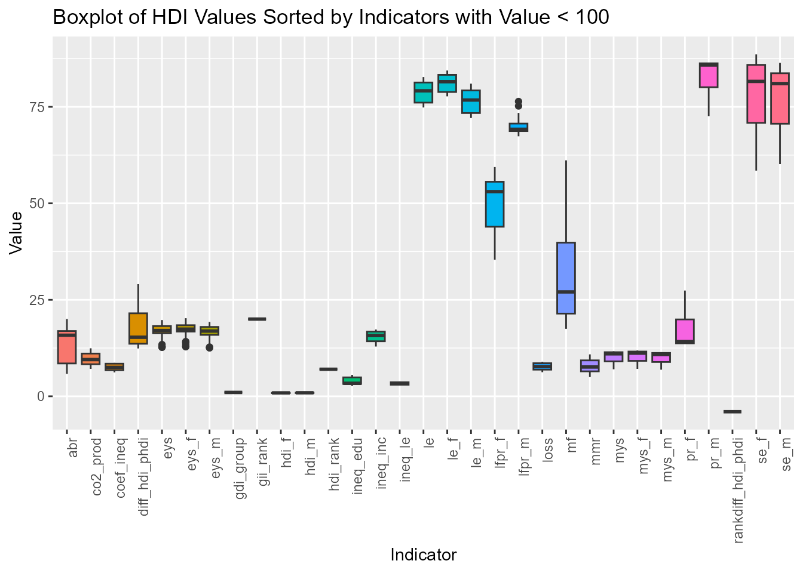

HDIAnalysis.RmdThe HDIAnalyze package provides tools to read, print,
summarize and visualize the Human Development Indicators (HDI) data. The
analysis of T]two countries are considered which are Ireland and
India.
Loading all the libraries in the beginning to make sure that all the dependencies are available.
library(HDIAnalyze)The usage of HDIAnalyze package (and its methods) for
the country Ireland is discussed below.
Below is the demonstration of how to use read_hdi
function to read a HDI data and to perform basic operation. We have two
methods of printing the output:
print1.HDIAnalyze: Prints the first 5 observations of
the HDI data with corresponding columns and their values.print2.HDIAnalyze: Prints the first 5 observations of
the HDI data in a tabular format.
# Load the data
hdi_irl <- read_hdi("hdro_indicators_irl.csv")
#> Data Loaded Succesfully
# Print the data (method 1)
print1.HDIAnalyze(hdi_irl)
#> Human Development Indicator Data
#> ----------------------------------
#> $country_code
#> [1] "IRL" "IRL" "IRL" "IRL" "IRL" "IRL"
#>
#> $country_name
#> [1] "Ireland" "Ireland" "Ireland" "Ireland" "Ireland" "Ireland"
#>
#> $indicator_id
#> [1] "abr" "abr" "abr" "abr" "abr" "abr"
#>
#> $indicator_name
#> [1] "Adolescent Birth Rate (births per 1,000 women ages 15-19)"
#> [2] "Adolescent Birth Rate (births per 1,000 women ages 15-19)"
#> [3] "Adolescent Birth Rate (births per 1,000 women ages 15-19)"
#> [4] "Adolescent Birth Rate (births per 1,000 women ages 15-19)"
#> [5] "Adolescent Birth Rate (births per 1,000 women ages 15-19)"
#> [6] "Adolescent Birth Rate (births per 1,000 women ages 15-19)"
#>
#> $index_id
#> [1] "GII" "GII" "GII" "GII" "GII" "GII"
#>
#> $index_name
#> [1] "Gender Inequality Index" "Gender Inequality Index"
#> [3] "Gender Inequality Index" "Gender Inequality Index"
#> [5] "Gender Inequality Index" "Gender Inequality Index"
#>
#> $value
#> [1] 15.814 16.584 16.457 15.454 14.375 14.338
#>
#> $year
#> [1] "1990" "1991" "1992" "1993" "1994" "1995"
#>
#> attr(,".internal.selfref")
#> <pointer: 0x0000022819978ab0>
#> attr(,"class")
#> [1] "HDIAnalyze" "data.table" "data.frame"
# Print the data(method 2)
print2.HDIAnalyze(hdi_irl)
#> Human Development Indicator Data
#> ----------------------------------
#>
#> |country_code |country_name |indicator_id |indicator_name |index_id |index_name | value|year |
#> |:------------|:------------|:------------|:---------------------------------------------------------|:--------|:-----------------------|------:|:----|
#> |IRL |Ireland |abr |Adolescent Birth Rate (births per 1,000 women ages 15-19) |GII |Gender Inequality Index | 15.814|1990 |
#> |IRL |Ireland |abr |Adolescent Birth Rate (births per 1,000 women ages 15-19) |GII |Gender Inequality Index | 16.584|1991 |
#> |IRL |Ireland |abr |Adolescent Birth Rate (births per 1,000 women ages 15-19) |GII |Gender Inequality Index | 16.457|1992 |
#> |IRL |Ireland |abr |Adolescent Birth Rate (births per 1,000 women ages 15-19) |GII |Gender Inequality Index | 15.454|1993 |
#> |IRL |Ireland |abr |Adolescent Birth Rate (births per 1,000 women ages 15-19) |GII |Gender Inequality Index | 14.375|1994 |
#> |IRL |Ireland |abr |Adolescent Birth Rate (births per 1,000 women ages 15-19) |GII |Gender Inequality Index | 14.338|1995 |HDIAnalyze Class
HDIAnalyze class supports several other methods for data
analysis and visualization. It provides a summary statistics
corresponding to each indicator values and a box plot corresponding to
each indicators whose values are less than 100.
summaryHDI.HDIAnalyze(hdi_irl)
#> Summary Statistics of Human Development Indicators Sorted by Indicators
#> -----------------------------------------------------------------------
#>
#> |indicator_id | mean| median| sd| min| max| count|
#> |:-----------------|--------:|--------:|--------:|---------:|----------:|-----:|
#> |abr | 13.67| 15.81| 4.91| 5.796| 20.021| 33|
#> |co2_prod | 9.68| 9.51| 1.55| 7.101| 12.433| 33|
#> |coef_ineq | 7.54| 7.49| 0.87| 6.191| 8.673| 13|
#> |diff_hdi_phdi | 17.25| 15.29| 4.69| 12.386| 29.065| 33|
#> |eys | 16.70| 17.04| 2.10| 12.679| 19.756| 33|
#> |eys_f | 16.96| 17.40| 2.12| 12.822| 20.231| 33|
#> |eys_m | 16.46| 16.90| 2.09| 12.540| 19.261| 33|
#> |gdi_group | 1.00| 1.00| NA| 1.000| 1.000| 1|
#> |gii_rank | 20.00| 20.00| NA| 20.000| 20.000| 1|
#> |gni_pc_f | 32779.29| 32100.17| 13193.12| 13422.880| 66876.421| 33|
#> |gni_pc_m | 61296.92| 58549.37| 17741.12| 35930.135| 108423.611| 33|
#> |gnipc | 46941.77| 45595.16| 15381.49| 24605.850| 87467.514| 33|
#> |hdi_f | 0.86| 0.88| 0.07| 0.720| 0.943| 33|
#> |hdi_m | 0.88| 0.91| 0.06| 0.756| 0.951| 33|
#> |hdi_rank | 7.00| 7.00| NA| 7.000| 7.000| 1|
#> |ineq_edu | 3.78| 3.36| 1.02| 2.678| 5.546| 13|
#> |ineq_inc | 15.55| 15.73| 1.42| 12.892| 17.291| 13|
#> |ineq_le | 3.29| 3.26| 0.39| 2.767| 3.851| 13|
#> |le | 78.84| 79.15| 2.65| 74.842| 82.716| 33|
#> |le_f | 81.20| 81.52| 2.24| 77.720| 84.412| 33|
#> |le_m | 76.52| 76.76| 3.01| 72.109| 81.017| 33|
#> |lfpr_f | 49.74| 53.03| 7.36| 35.380| 59.400| 33|
#> |lfpr_m | 70.07| 69.19| 2.01| 67.370| 76.390| 33|
#> |loss | 7.73| 7.68| 0.90| 6.237| 8.931| 13|
#> |mf | 30.79| 27.04| 11.47| 17.482| 61.137| 33|
#> |mmr | 7.77| 7.59| 1.86| 4.984| 10.857| 33|
#> |mys | 10.18| 11.00| 1.51| 6.996| 11.657| 33|
#> |mys_f | 10.35| 11.17| 1.54| 7.097| 11.863| 33|
#> |mys_m | 10.02| 10.82| 1.49| 6.889| 11.438| 33|
#> |pr_f | 17.43| 14.16| 4.79| 13.717| 27.397| 33|
#> |pr_m | 82.57| 85.84| 4.79| 72.603| 86.283| 33|
#> |rankdiff_hdi_phdi | -4.00| -4.00| NA| -4.000| -4.000| 1|
#> |se_f | 78.04| 81.59| 9.22| 58.476| 88.586| 33|
#> |se_m | 77.13| 81.03| 8.40| 60.155| 86.417| 33|
plotHDI.HDIAnalyze(hdi_irl)
The above methods of HDIAnalysis are discussed for a
second country of India.
hdi_ind <- read_hdi("hdro_indicators_ind.csv")
#> Data Loaded Succesfully
print1.HDIAnalyze(hdi_ind)
#> Human Development Indicator Data
#> ----------------------------------
#> $country_code
#> [1] "IND" "IND" "IND" "IND" "IND" "IND"
#>
#> $country_name
#> [1] "India" "India" "India" "India" "India" "India"
#>
#> $indicator_id
#> [1] "abr" "abr" "abr" "abr" "abr" "abr"
#>
#> $indicator_name
#> [1] "Adolescent Birth Rate (births per 1,000 women ages 15-19)"
#> [2] "Adolescent Birth Rate (births per 1,000 women ages 15-19)"
#> [3] "Adolescent Birth Rate (births per 1,000 women ages 15-19)"
#> [4] "Adolescent Birth Rate (births per 1,000 women ages 15-19)"
#> [5] "Adolescent Birth Rate (births per 1,000 women ages 15-19)"
#> [6] "Adolescent Birth Rate (births per 1,000 women ages 15-19)"
#>
#> $index_id
#> [1] "GII" "GII" "GII" "GII" "GII" "GII"
#>
#> $index_name
#> [1] "Gender Inequality Index" "Gender Inequality Index"
#> [3] "Gender Inequality Index" "Gender Inequality Index"
#> [5] "Gender Inequality Index" "Gender Inequality Index"
#>
#> $value
#> [1] 122.287 128.465 128.913 123.529 124.343 122.403
#>
#> $year
#> [1] "1990" "1991" "1992" "1993" "1994" "1995"
#>
#> attr(,".internal.selfref")
#> <pointer: 0x0000022819978ab0>
#> attr(,"class")
#> [1] "HDIAnalyze" "data.table" "data.frame"
print2.HDIAnalyze(hdi_ind)
#> Human Development Indicator Data
#> ----------------------------------
#>
#> |country_code |country_name |indicator_id |indicator_name |index_id |index_name | value|year |
#> |:------------|:------------|:------------|:---------------------------------------------------------|:--------|:-----------------------|-------:|:----|
#> |IND |India |abr |Adolescent Birth Rate (births per 1,000 women ages 15-19) |GII |Gender Inequality Index | 122.287|1990 |
#> |IND |India |abr |Adolescent Birth Rate (births per 1,000 women ages 15-19) |GII |Gender Inequality Index | 128.465|1991 |
#> |IND |India |abr |Adolescent Birth Rate (births per 1,000 women ages 15-19) |GII |Gender Inequality Index | 128.913|1992 |
#> |IND |India |abr |Adolescent Birth Rate (births per 1,000 women ages 15-19) |GII |Gender Inequality Index | 123.529|1993 |
#> |IND |India |abr |Adolescent Birth Rate (births per 1,000 women ages 15-19) |GII |Gender Inequality Index | 124.343|1994 |
#> |IND |India |abr |Adolescent Birth Rate (births per 1,000 women ages 15-19) |GII |Gender Inequality Index | 122.403|1995 |
summaryHDI.HDIAnalyze(hdi_ind)
#> Summary Statistics of Human Development Indicators Sorted by Indicators
#> -----------------------------------------------------------------------
#>
#> |indicator_id | mean| median| sd| min| max| count|
#> |:------------------|-------:|-------:|-------:|--------:|---------:|-----:|
#> |abr | 67.07| 48.31| 42.02| 16.299| 128.913| 33|
#> |assets | 4.52| 4.52| NA| 4.523| 4.523| 1|
#> |child_mortality | 3.58| 3.58| NA| 3.580| 3.580| 1|
#> |co2_prod | 1.22| 1.10| 0.43| 0.664| 1.900| 33|
#> |coef_ineq | 32.78| 32.11| 1.71| 30.526| 35.070| 13|
#> |cooking_fuel | 11.22| 11.22| NA| 11.222| 11.222| 1|
#> |diff_hdi_phdi | 2.11| 1.88| 0.48| 1.528| 2.950| 33|
#> |drinking_water | 2.15| 2.15| NA| 2.151| 2.151| 1|
#> |electricity | 1.68| 1.68| NA| 1.677| 1.677| 1|
#> |eys | 9.85| 9.74| 1.62| 8.017| 12.584| 33|
#> |eys_f | 9.29| 9.21| 2.22| 6.533| 12.677| 33|
#> |eys_m | 10.36| 10.23| 1.06| 9.196| 12.562| 33|
#> |gdi_group | 5.00| 5.00| NA| 5.000| 5.000| 1|
#> |gii_rank | 108.00| 108.00| NA| 108.000| 108.000| 1|
#> |gni_pc_f | 1593.12| 1505.22| 613.71| 821.306| 2957.854| 33|
#> |gni_pc_m | 5808.80| 5180.35| 2652.76| 2657.756| 10696.448| 33|
#> |gnipc | 3771.92| 3406.81| 1659.07| 1773.798| 6950.527| 33|
#> |hdi_f | 0.47| 0.47| 0.08| 0.354| 0.582| 33|
#> |hdi_m | 0.59| 0.59| 0.07| 0.490| 0.684| 33|
#> |hdi_rank | 134.00| 134.00| NA| 134.000| 134.000| 1|
#> |housing | 10.99| 10.99| NA| 10.986| 10.986| 1|
#> |ineq_edu | 39.56| 38.67| 2.46| 36.876| 42.420| 13|
#> |ineq_inc | 38.09| 38.42| 0.75| 37.147| 39.357| 13|
#> |ineq_le | 20.70| 20.38| 2.96| 16.937| 25.643| 13|
#> |le | 65.08| 65.41| 3.83| 58.652| 70.910| 33|
#> |le_f | 66.36| 66.89| 4.13| 59.537| 72.395| 33|
#> |le_m | 63.90| 64.05| 3.55| 57.876| 69.525| 33|
#> |lfpr_f | 28.93| 29.19| 3.82| 20.750| 37.710| 33|
#> |lfpr_m | 78.40| 78.83| 2.27| 73.860| 82.810| 33|
#> |loss | 33.29| 32.70| 1.64| 31.056| 35.490| 13|
#> |mf | 3.67| 3.37| 0.59| 2.943| 4.784| 33|
#> |mmr | 276.24| 248.17| 140.82| 102.654| 498.041| 33|
#> |mpi_rank | 0.07| 0.07| NA| 0.069| 0.069| 1|
#> |mys | 4.69| 4.64| 1.16| 2.782| 6.571| 33|
#> |mys_f | 3.49| 3.32| 1.12| 1.793| 5.529| 33|
#> |mys_m | 5.91| 5.98| 1.23| 3.621| 7.645| 33|
#> |nutrition | 28.58| 28.58| NA| 28.579| 28.579| 1|
#> |pr_f | 9.84| 9.30| 2.13| 7.342| 14.634| 33|
#> |pr_m | 90.16| 90.70| 2.13| 85.366| 92.658| 33|
#> |rankdiff_hdi_phdi | 7.00| 7.00| NA| 7.000| 7.000| 1|
#> |sanitation | 9.11| 9.11| NA| 9.112| 9.112| 1|
#> |school_attendance | 9.46| 9.46| NA| 9.461| 9.461| 1|
#> |se_f | 24.52| 22.40| 8.39| 12.819| 40.959| 33|
#> |se_m | 43.61| 43.37| 9.34| 27.129| 58.762| 33|
#> |years_of_schooling | 18.71| 18.71| NA| 18.710| 18.710| 1|